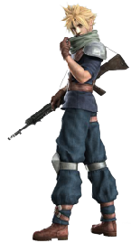
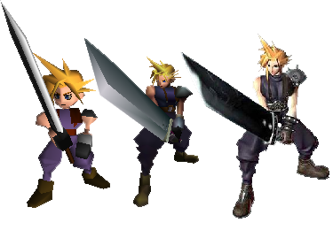
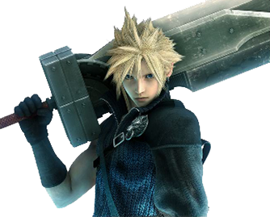

The Hero's Story
Early Years
Cloud was born in the small mountainside town of Nibelheim, and was treated as an outcast by the other children in the village, making him become a loner. He believes himself generally superior to them, but wants to befriend a particular girl from the village named Tifa Lockhart . One day Tifa convinces her reluctant group of friends to climb Mt. Nibel to look for the spirit of Tifa's mother. Cloud hears of this plan and decides to follow the group of children. During the ascent, Tifa's friends abandon her one by one to run back towards Nibelheim leaving only Tifa and Cloud. A bridge carrying the two breaks and they fall down a section of the mountain. Tifa's father blames Cloud for the accident. After this, Cloud begins to see himself as weak and decides to join the Shinra Corporation's elite fighting unit SOLDIER to be able to protect Tifa and become as strong as its most legendary member, Sephiroth. He travels to the capital city of Midgar and enrolls in SOLDIER, but quickly fails out of the program, and is forced to become a lowly Shinra infantryman.
Crisis Core

Roughly two years after arriving in Midgar, Cloud met up with Zack, a 1st class SOLDIER who quickly became friends with Cloud, when their helicopter crashed into the mountains near the Modeo Ravine. Later on, Cloud is sent to Nibelheim as an escort to Sephiroth and Zack, as they investigated an incident in the town's Mako reactor. The three men were led by Tifa who was their tour guide as she hoped to see Cloud whom she unrecognized with his infantryman mask on to the reactor, but while there, Sephiroth discovered the experiments performed by Shinra on him with Jenova's DNA and Mako energy. Seeing the truth behind his origins drove Sephiroth mad, and he butchered the entire town's populace by setting Nibelheim on fire, including Cloud's mother. Cloud rushed to the reactor and saw Zack and Tifa unconscious. He picked up Zack's Buster sword, and while Sephiroth was distracted, Cloud stabbed him through the stomach and dropped him into the Mako below. In an attempt to cover up the incident, Shinra rebuilt the town and filled it with their employees, while Cloud was taken away to be experimented on by Professor Hojo. Zack helped him escaped Shinra's lab, but he was suffering from Mako poisoning. When he awoke from the semi-comatose state he was in, Cloud was met with the sight of his best friend dying at his feet. He is given the Buster Sword before Zack dies. Traumatized and in shock, Cloud confused his own identity with Zack's due to the experiment.
Final Fantasy VII

Cloud traveled to Midgar and met the most unlikely person, Tifa after being apart from her for 8 years. Believing he truly lived parts of Zack's life, he told her he is a mercenary now and was a former member of SOLDIER. Tifa noticed how odd he was acting and asked Cloud to join the anti-ShinRa resistance group, called AVALANCHE, to keep an eye on him. Cloud eventually agreed after remembering a promise he made to Tifa and joined the group, becoming friends with the leader, Barret. After AVALANCHE blew up a mako reactor, Cloud got cut off from the group and met Aerith the flower girl who happens to be the lover of Cloud's best friend Zack. Memories of Zack surface in Cloud's mind and he recalled that Zack was very close to the woman. Cloud vowed to protect her. When Aerith gets kidnapped by Shinra, Cloud leads an attack on the ShinRa building to rescue her. They are captured and imprisoned. During the night they woke up to find the cell door open and everyone dead. Reaching the top floor of the building, Cloud sees President Shinra dead, impaled by Sephiroth's sword. Cloud remembered what happened years ago at the Nibelheim reactor, and planned to figure out what was going on as he was traumatized.
Heading to the Temple of the Ancients, Cloud attempted to prevent Sephiroth from obtaining the Black Materia, which could be used to summon Meteor. Cloud retrieved the Black Materia, but Sephiroth started messing with his mind, confusing him about who he truly was. Sephiroth manipulated Cloud into giving him the Black Materia by controlling his mind. Aerith traveled to the Forgotten City and was killed by Sephiroth right in front of Cloud's eyes. Cloud wasn't being controlled when he saw Aerith die however, he did nothing at all to save her. Cloud chased Sephiroth to stop him and avenge Aerith. With the Black Materia, Sephiroth summoned Meteor and Cloud fell into the Lifestream. The Lifestream and Tifa helped Cloud regain his true self. Stronger then he was before, Cloud killed Sephiroth in the Northern Cave, which allowed Holy and the Lifestream to destroy Meteor and save the world.
Final Fantasy VII: The Novel
Cloud grieved for his fallen friends, but believed the best way to honor them was to move forward with his life. Cloud helps Tifa build a bar, which they name Seventh Heaven after the old AVALANCHE hideout, and Cloud moves in with her taking care of two kids, Marlene, Barret's adoptive daughter, and Denzel, an orphan boy, lived with them who had Geostigma, helping Tifa run the bar. Cloud traveled to different cities to acquire the provisions needed for the bar. One such outing, he traded a life time voucher to the bar for Fenrir, an odd looking motorcycle, and Cloud proceeded to fix up the bike. It was then that Tifa suggested he start a delivery service. Strife Delivery Services was born and business boomed just like the bar.
Shortly after starting the business, Cloud, contracted Geostigma, which had no known cure. He becomes closed off from the world, isolated himself from his family, and told no one he was sick. He grew distant as the Geostigma got worse.
Final Fantasy VII: Advent Children

Thinking it best to be away from his family, Cloud moved out of the house and began living in Aerith's church as he felt close to her. Continuing his delivery service, Cloud receives a call from Tifa and is told that he is needed in Healin for Reno. He was in pain from the Geostigma as he hung up the phone. While on the road to Healin, he gets attacked by three silver haired men on motorcycles. He was barely able to defend himself and get away. In Healin, Cloud learns that ShinRa is trying to be rebuilt their army. Angered, he leaves, not wanting to be a part of the company that has caused him and his friends so much trouble. Arriving back in Midgar, Cloud heads to Aerith's church to find Tifa unconscious. He rushes to her side and Tifa wakes only long enough to tell him that Marlene was kidnapped. Before he can do anything about it, pain racks his body yet again from the Geostigma and he slips into unconsciousness. When he awakes, he is told that Denzel is also missing. Cloud does not immediately go after Marlene and Denzel; he is too afraid to get there and fail to save them just like he believes he did with Zack and Aerith. But Tifa persuades him to go.
Cloud heads to the Forgotten City and battles with Kadaj, Loz, and Yazoo, the three silver haired men who kidnapped the kids. He fails to defeat them and is saved by one of his friends, Vincent. Vincent tells Cloud that Kadaj and his gang are physical manifestations of Sephiroth formed with his cells, and that a fusion with Jenova cells will cause Sephiroth's return. They are looking for the remains of Jenova to accomplish this. Cloud sees this as a chance to earn forgiveness for failing to protect his friends and he heads back to Midgar.
A burden seems to be lifted from Cloud as he takes Tifa's advice and tries to change events instead of running away. Kadaj summoned Bahamut, causing panic and destruction in Midgar. Cloud and his friends battle against Bahamut and Cloud is able to defeat it with their help. Cloud chases Kadaj into Aerith's church, realizing that he was able to find the remains of Jenova. When Kadaj attacks Cloud, it blasts a chunk of the church floor with it. Lifestream-influenced water pours out, curing Cloud of his Geostigma. Kadaj takes off again, Cloud follows, and they battle in the ruins of the ShinRa Building. Cloud clearly has the advantage until Kadaj fuses himself with the remains of Jenova. Sephiroth is reborn and as they fight he tries again to twist Cloud's mind and cause him to despair. Cloud ignores him until Sephiroth makes the mistake of asking him what he cherishes most in the world so he can have the pleasure of taking it away from him. Inspired by the memories and thoughts of his family and friends, Cloud replies that there is nothing in this world he doesn't cherish and he defeats Sephiroth.
Feeling better then he had in a long time, Cloud closes his eyes and lets the rain fall on his face. Suddenly, Cloud is shot in the back and an explosion is set off by Yazoo and Loz, apparently killing all three of them. However, Cloud's spirit is stopped by Zack and Aerith from entering the Lifestream. Cloud wakes up in the Lifestream-infused water in Aerith's church, surrounded by family and friends. Cloud realizes that being with the people he loves is the real joy in the world, that he was never alone. Cloud also finally forgives himself for Aerith and Zack's deaths seeing as they want him to move on and enjoy the current life he has with AVALANCHE.